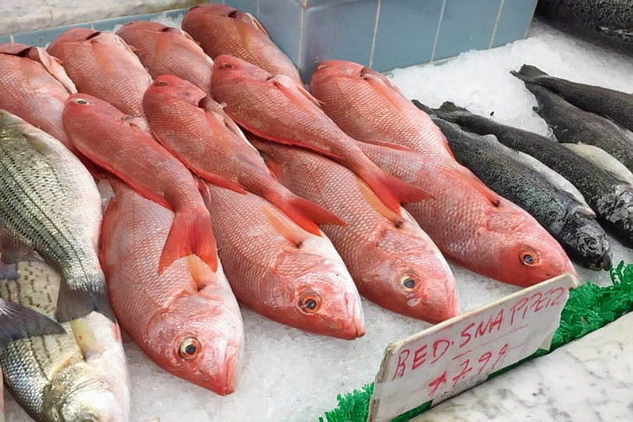
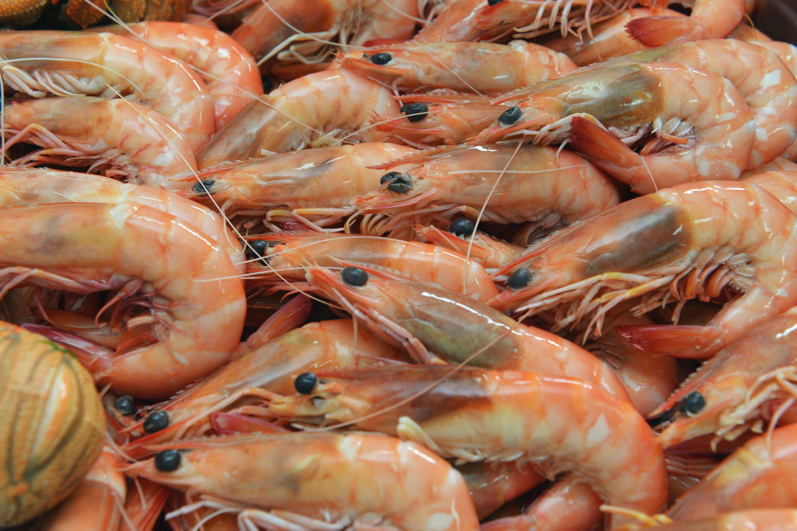

Fish
Rs.50

Prawns
RS. 40

Tomato
Rs. 80

Rice
Rs. 60
There is a need to connect farmers to a value-chain as this will help them in becoming agri-entrepreneurs, Agriculture and Farmers Welfare Secretary, SK Pattanayak today said while speaking at a conference on ‘Development of Linkages for Sustainability of FPOs’ organised by FICCI and Small Farmers Agribusiness Consortium (SFAC) in New Delhi today. “FPO (Farmer Producer Organization) Scheme is one of the opportunities in the hands of the farmers to connect to a value-chain and enhance their income and empower themselves. Credit needs to reach farmers to ensure they follow successful business models,” said Pattanayak. The online platform for connecting FPOs with potential farmers was also launched on the occasion. He added that technology has made it possible to connect farmers to the market thereby reducing the clout of middlemen. “The SFAC e-platform will help connect farmers to consumers for trading whereas eNAM (e-National Agriculture Market) connects the farmers with market in an organised wholesale market. There will be no middlemen and this will augment farmers’ income,” the top bureaucrat in the Agriculture Ministry said.
Highlighting the significance of FPOs, Prof. Ramesh Chand, Member, NITI Aayog said, “There is a need to diversify agriculture from low-value to high-value crop — better price realisation for farmers is needed and small farmers can take advantage of futures trading, curb black-marketing and help in value addition and processing.”
“The motive behind the launch of the FPO Buyer E-interface is to improve market linkages by integrating the value chain, increasing market accessibility and enabling small holders to attract and negotiate with larger buyer and grow their business. There is a need to encourage and handhold farmers. With this portal, we hope to plug the information gap between FPOs and organised buyers.”
The e-interface is launched with the objective of helping farmers get the right price for their produce and aid them in doubling their income. The FPO Buyer E-interface is a first of its kind portal dedicated to connect FPOs with potential buyers and other stakeholders. It will also help the FPOs to get better prices and get greater exposure to their produce. SFAC will act as a facilitator to link both the stakeholders on a single platform. In order to address the credit needs of Farmer Producer Companies (FPCs), SFAC and State Bank of India also signed an agreement for comprehensive growth and financing of FPOs. SBI would be the preferred banker for FPO financing in the states of West Bengal, Karnataka and Madhya Pradesh.
Rs.50
RS. 40
Rs. 80
Rs. 60
Rs.60
Rs. 20

Rs. 80 .
Rs. 40